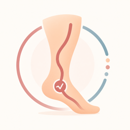
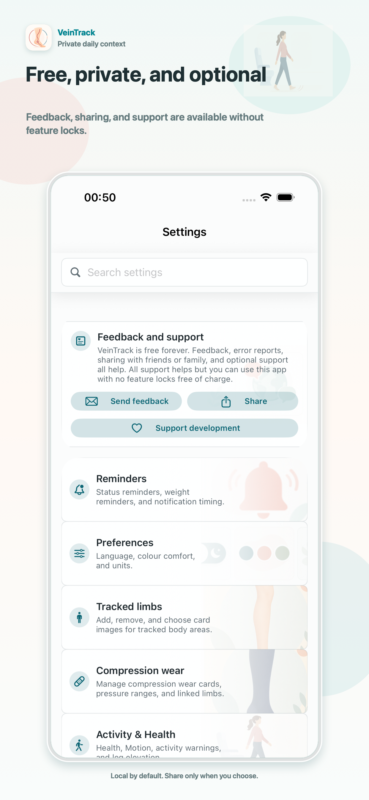

VeinTrack Beta
Private vein-health tracking for everyday context.
VeinTrack helps people track vein-health-related daily context on device, including symptoms, leg elevation, compression use, activity and rest sessions, weight, sleep, travel context, consultations, photos, and reports.
VeinTrack supports personal tracking, reminders, and report preparation. It does not diagnose, treat, or replace professional medical advice.
Free app notice. VeinTrack is free to use. Optional payments are offered only inside the app, do not unlock features, and are never required.
Support
Feedback And Support
VeinTrack is intended to stay free to use, with no feature locks tied to support.

Feedback, error reports, and suggestions are genuinely helpful. Sharing VeinTrack with a friend, relative, clinician, or someone who might find it useful is also a meaningful form of support.
Optional Support
Optional financial support may be available inside the app through Apple StoreKit. It is always optional and does not unlock features.